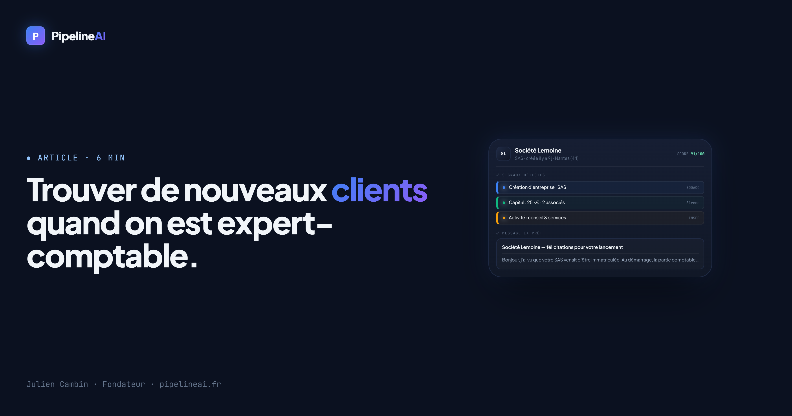

Trouver de nouveaux clients quand on est expert-comptable : la méthode des signaux

Le métier d'expert-comptable a une particularité confortable : des clients récurrents, des honoraires réguliers. Mais c'est aussi un piège — on développe rarement son portefeuille de façon active, et le jour où un client part (cession, liquidation, départ à la retraite du dirigeant), il faut le remplacer. Or l'acquisition repose presque toujours sur le bouche-à-oreille : précieux, mais lent et imprévisible.
Pourtant, il existe un moment idéal pour décrocher un nouveau client comptable — et il est public et repérable. Voici la méthode des signaux appliquée à l'expertise comptable.
Pourquoi la prospection « classique » colle mal au métier
Démarcher à froid une entreprise qui a déjà un comptable, c'est frapper à une porte fermée : le changement d'expert-comptable est rare, engageant, et rarement spontané. Résultat : des taux de réponse très faibles et l'impression de déranger.
La bonne question n'est donc pas « qui pourrait avoir besoin d'un comptable ? » (presque toutes les entreprises en ont déjà un) mais « qui en a besoin maintenant, ou va devoir en changer ? ». Et ça, certains événements le trahissent.
Les signaux qui annoncent un besoin comptable
Un « signal », c'est un événement public récent qui crée — ou révèle — un besoin :
- Création d'entreprise : c'est LE signal en or pour un expert-comptable. Une société toute neuve doit choisir un comptable tout de suite (statuts, premier exercice, TVA, social). Personne n'est encore installé chez elle → la porte est grande ouverte.
- Recrutement : une PME qui embauche déclenche de la paie, du social, des obligations nouvelles → besoin d'accompagnement, parfois insatisfaite de son cabinet actuel devenu trop petit.
- Nouvel établissement / croissance : changement d'échelle = comptabilité plus complexe, besoin de conseil (trésorerie, fiscalité).
- Marché public remporté : trésorerie et croissance → besoin de structurer le suivi financier.
Ces informations sont publiques : registres officiels français (INSEE/Sirene, BODACC pour les créations, France Travail pour les recrutements, marchés publics). En les croisant, vous obtenez une liste d'entreprises avec un besoin actuel, le nom du dirigeant, et une accroche évidente.
Et si on vous livrait ces entreprises, message inclus ?
C'est exactement ce que fait PipelineAI : il détecte les entreprises de votre zone qui viennent de se créer, de recruter ou de se développer, identifie le dirigeant, et génère un message de prise de contact personnalisé — prêt à envoyer. Vous arrêtez de chercher, vous contactez au bon moment.
Testez avec 15 prospects qualifiés pour 9,90 € (paiement unique, sans engagement).
Obtenir mes 15 leads → 9,90 €Le signal le plus rentable : les créations d'entreprises
Pour un expert-comptable, viser les entreprises qui viennent de se créer change tout : elles n'ont pas encore de comptable installé, elles ont une décision urgente à prendre, et elles sont réceptives à un accompagnement clair. Vous n'êtes pas un démarcheur qui tente de débaucher — vous êtes la bonne réponse, au bon moment.
Mieux : en arrivant tôt, vous installez une relation récurrente qui peut durer des années. Le coût d'acquisition est vite rentabilisé.
La méthode en 3 étapes
- Définissez votre cible : types d'entreprises que vous accompagnez le mieux (TPE, professions libérales, BTP, e-commerce…) + zone géographique.
- Repérez les signaux : créations récentes, recrutements et développements dans ces critères (manuellement via les registres, ou automatiquement avec un outil dédié).
- Contactez avec une accroche liée au signal : « Bonjour [Prénom], j'ai vu que vous venez de créer [entreprise] — félicitations. Le choix du comptable est l'une des premières décisions structurantes ; je peux vous expliquer en 15 min comment bien démarrer. »
Un message ancré sur un événement réel obtient bien plus de réponses qu'un mailing générique — et il tombe pile au moment où la décision se prend.
En résumé
Pour développer son portefeuille en expertise comptable, inutile de démarcher au hasard des entreprises déjà équipées. Visez celles qui viennent de se créer ou de bouger, contactez-les avec une accroche liée à leur situation, et faites-en une habitude régulière. C'est le meilleur rapport temps/résultats — et le moyen le plus sûr de remplacer un client perdu avant même de le perdre.
À lire aussi : Prospection pour consultant indépendant : la méthode des signaux et Comment trouver des clients quand on est une agence web.
Arrêtez de chercher. Recevez vos prospects.
PipelineAI vous livre des entreprises de votre zone qui viennent de se créer ou de se développer, avec dirigeant nommé et message prêt à envoyer. 15 leads pour 9,90 €, sans engagement.
Démarrer ma prospection →